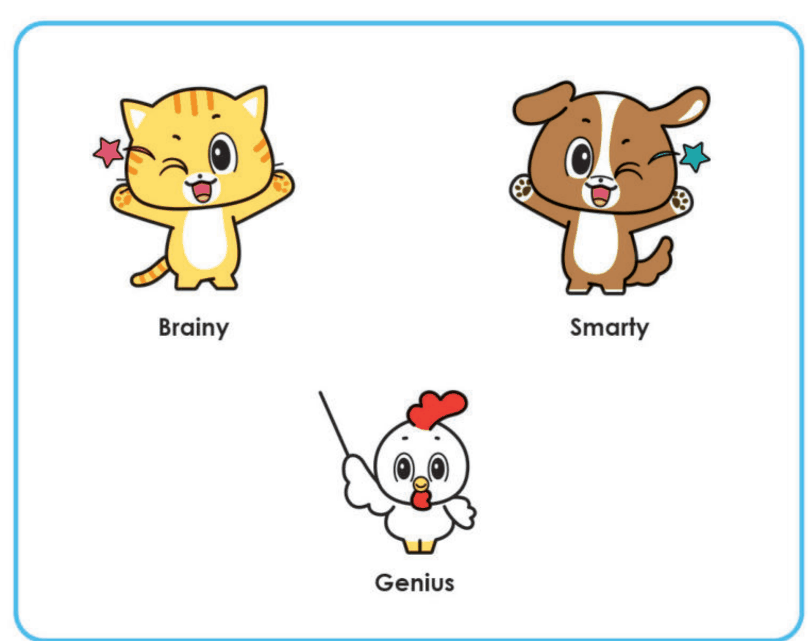
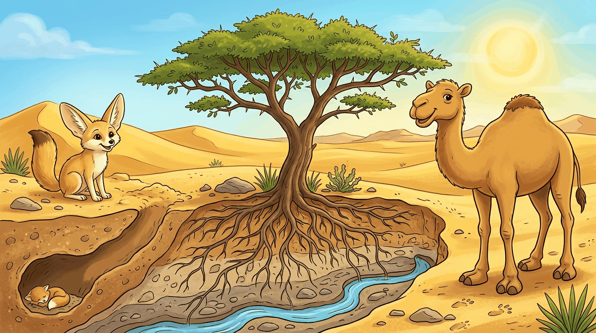
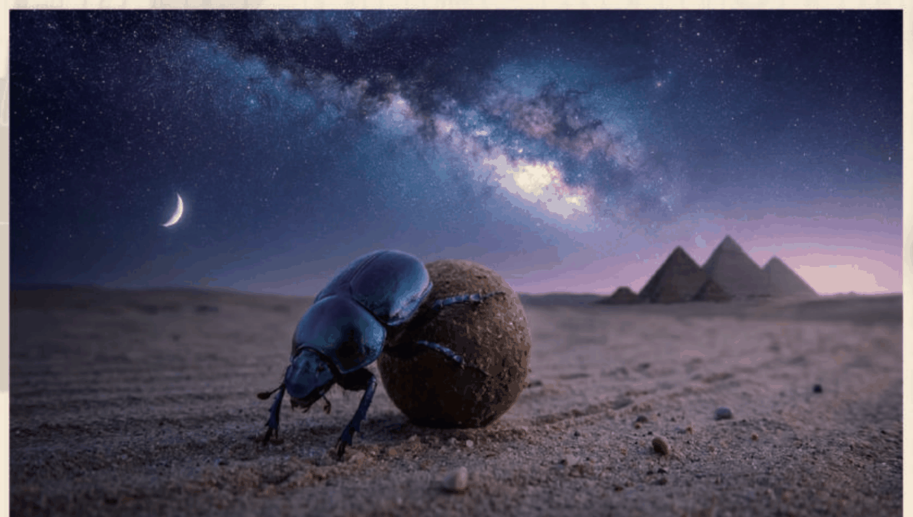

الشكل (1): الكائنات الحية والمواطن الطبيعية في مصر (Living Organisms & Habitats in Egypt)

Include Humans, Animals, and Plants.
They can: Eat Breathe Grow Reproduce Move.
تشمل الإنسان، والحيوانات، والنباتات.
صفاتها: تأكل، وتتنفس، وتكبر (تنمو)، وتتكاثر (تنتج صغاراً)، وتتحرك!
Include Rocks, Water, Sand, and Air.
They DO NOT eat, breathe, grow, or reproduce!
مثل الصخور، الماء، الرمال، والهواء. لا تتغذى، ولا تتنفس، ولا تنمو!
Remember: Plants ARE living organisms because they breathe, grow, and need water and sunlight to live!
| Case (الحالة) | How to hold the magnifying glass (طريقة الاستخدام) |
|---|---|
| Object CAN be moved (يمكن تحريك الشيء كحجر أو ورقة) |
Hold the magnifying glass close to your eye, and move the object back and forth until clear. قرّب العدسة من عينك وحرّك الشيء للأمام والخلف حتى تراه بوضوح. |
| Object CANNOT be moved (شيء ثابت كجذع شجرة) |
Hold the object still, and move the magnifying glass back and forth. ثبّت عينك والشيء، وحرّك العدسة للأمام والخلف للضبط. |
Habitat: The natural place where a living organism lives, finds food, water, and shelter to survive.
الموطن (البيئة): هو المكان الطبيعي الذي يعيش فيه الكائن الحي ويجد غذاءه ومأواه.
| Habitat (البيئة) | Animals (حيوانات) | Plants (نباتات) |
|---|---|---|
| Nile River & Farmlands حوض النيل والأراضي الزراعية |
• Cattle Egret (أبو قردان) (صديق الفلاح) • Plain Tiger Butterfly (فراشة الدلتا) |
• Lotus Flower (زهرة اللوتس) • Papyrus (نبات البردي) |
| Desert Environment البيئة الصحراوية (حارة وجافة) |
• Fennec Fox (ثعلب الفينك) • Camel (الجمل) • Sand Lizard (سحلية الرمال) • Dung Beetle / Scarab (الجعران) |
• Acacia Tree (شجرة السنط) • Palm Trees (النخيل) • Colocynth (الحنظل) |

Adaptation: Changing body parts or behaviors that help living organisms survive in their environment.
تغير في تركيب الجسم أو السلوك يساعد الكائن الحي على البقاء في بيئته القاسية.

The Scarab (Dung Beetle) is the "Desert Cleaner". At night, it rolls dung balls in straight lines by looking at the stars (Milky Way galaxy) to navigate without getting lost!
خنفساء الجعران منظف الصحراء: ليلاً تنظر إلى نجوم مجرة درب التبانة لتسير في خطوط مستقيمة دون أن تضل طريقها في الظلام!
Game: "The Desert Camouflage Challenge" (تحدي التمويه في البيت)
قص 5 أوراق صفراء بلون السجاد و5 أوراق حمراء. انثرها واطلب من أحد التقاطها في 5 ثوانٍ. ستكتشف أن اللون المطابق للسجاد يصعب جداً رؤيته، تماماً كفراء ثعلب الفينك ولون سحلية الرمال في الصحراء (Camouflage)!
A) Choose the correct answer:
B) True or False:
1. The place where a living organism lives and finds food and shelter. ( .............................. )
2. Characteristics that help living organisms survive in their environment. ( .............................. )
1. Fennec fox has extra-large ears. ➔ ................................................................................
2. Camel has thick flat padded feet. ➔ ................................................................................
1. Fennec fox lived in a snowy Arctic forest with sandy fur? ➔ ........................................................
2. Acacia tree had very short roots in the desert? ➔ ...................................................................
A) Choose: 1. c) Acacia Tree | 2. b) Cool its body | 3. c) Hump
B) True or False: 1. ✘ False (Plants ARE living organisms) | 2. ✔ True | 3. ✔ True
1. Habitat (الموطن / البيئة) 2. Adaptation (التكيف)
1. To release heat to cool its body, and to hear faint sounds of prey. (لتبريد جسمه بإخراج الحرارة وسماع الفرائس).
2. To avoid sinking into soft hot sand and protect from heat. (لحمايتها من الغوص في الرمال الساخنة).
1. It would be easily seen by predators (cannot camouflage) and freeze. (يظهر للأعداء ويفقد التمويه).
2. It could not absorb underground water and would die of drought. (تموت لعدم وصولها للمياه الجوفية).
Farmlands / Nile basin — Desert.